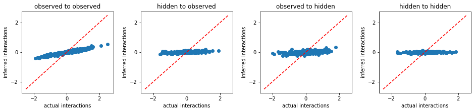
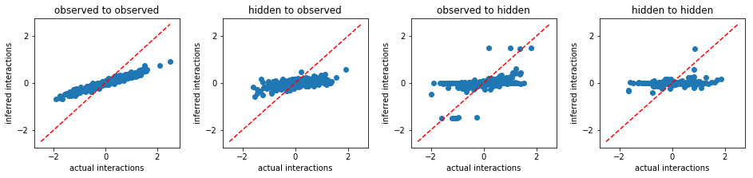
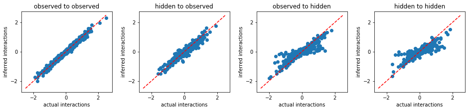
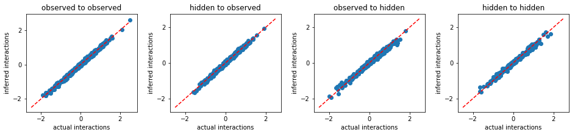

Comparision: FEM vs. other methods¶

We compare the performance of Free Energy Minimization (FEM) with other existing methods based on mean field approximations and Maximum Likelihood Estimation (MLE).
First of all, we import the necessary packages to the jupyter notebook:
In [1]:
import numpy as np
import sys
import matplotlib.pyplot as plt
import simulate
import inference
%matplotlib inline
np.random.seed(1)
We generate a true interaction matrix w0 and time series data
s0.
In [2]:
# parameter setting:
n0 = 40 # number of variables
g = 4.0 # interaction variability parameter
w0 = np.random.normal(0.0,g/np.sqrt(n0),size=(n0,n0))
# generating time-series data
l = int(4*(n0**2))
s0 = simulate.generate_data(w0,l)
Suppose only a subset of variables is observed.
In [3]:
nh0 = 15
n = n0 - nh0
s = s0[:,:n].copy()
We use a number of hidden variables as its actual value.
In [4]:
nh = nh0
Because we will plot the prediction result of every methods, let us write a plot function.
In [5]:
def plot_result(w0,w):
plt.figure(figsize=(13.2,3.2))
plt.subplot2grid((1,4),(0,0))
plt.title('observed to observed')
plt.plot([-2.5,2.5],[-2.5,2.5],'r--')
plt.scatter(w0[:n,:n],w[:n,:n])
plt.xticks([-2,0,2])
plt.yticks([-2,0,2])
plt.xlabel('actual interactions')
plt.ylabel('inferred interactions')
plt.subplot2grid((1,4),(0,1))
plt.title('hidden to observed')
plt.plot([-2.5,2.5],[-2.5,2.5],'r--')
plt.scatter(w0[:n,n:],w[:n,n:])
plt.xticks([-2,0,2])
plt.yticks([-2,0,2])
plt.xlabel('actual interactions')
plt.ylabel('inferred interactions')
plt.subplot2grid((1,4),(0,2))
plt.title('observed to hidden')
plt.plot([-2.5,2.5],[-2.5,2.5],'r--')
plt.xticks([-2,0,2])
plt.yticks([-2,0,2])
plt.scatter(w0[n:,:n],w[n:,:n])
plt.xlabel('actual interactions')
plt.ylabel('inferred interactions')
plt.subplot2grid((1,4),(0,3))
plt.title('hidden to hidden')
plt.plot([-2.5,2.5],[-2.5,2.5],'r--')
plt.scatter(w0[n:,n:],w[n:,n:])
plt.xticks([-2,0,2])
plt.yticks([-2,0,2])
plt.xlabel('actual interactions')
plt.ylabel('inferred interactions')
plt.tight_layout(h_pad=1, w_pad=1.5)
plt.show()
Naive Mean-Field approximation¶
In [6]:
print('nMF:')
cost_obs,w,sh = inference.infer_hidden(s,nh,method='nmf')
w,sh = inference.hidden_coordinate(w0,s0,w,sh)
plot_result(w0,w)
nMF:

Thouless-Anderson-Palmer mean field approximation¶
In [7]:
print('TAP:')
cost_obs,w,sh = inference.infer_hidden(s,nh,method='tap')
w,sh = inference.hidden_coordinate(w0,s0,w,sh)
plot_result(w0,w)
TAP:
Exact mean field approximation¶
In [8]:
print('eMF:')
cost_obs,w,sh = inference.infer_hidden(s,nh,method='emf')
w,sh = inference.hidden_coordinate(w0,s0,w,sh)
plot_result(w0,w)
eMF:

Maximum Likelihood Estimation¶
In [9]:
print('MLE:')
cost_obs,w,sh = inference.infer_hidden(s,nh,method='mle')
w,sh = inference.hidden_coordinate(w0,s0,w,sh)
plot_result(w0,w)
MLE:

Free Energy Minimization¶
In [10]:
print('FEM:')
cost_obs,w,sh = inference.infer_hidden(s,nh,method='fem')
w,sh = inference.hidden_coordinate(w0,s0,w,sh)
plot_result(w0,w)
FEM:

From the above results, we conclude that FEM outperforms other existing methods.
In [ ]: